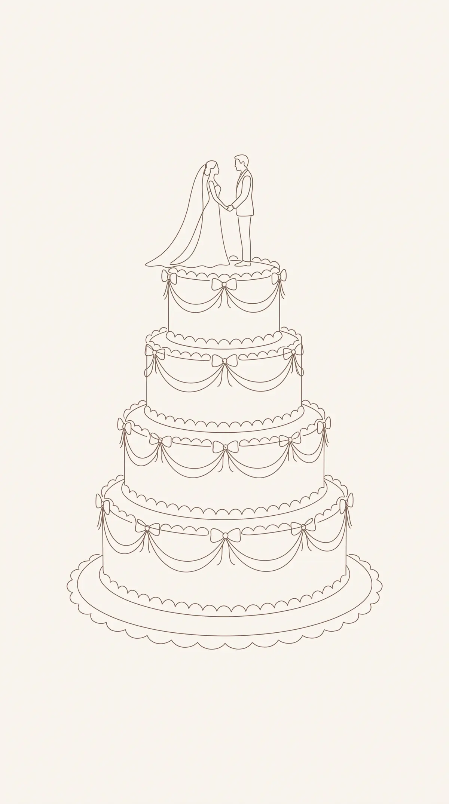
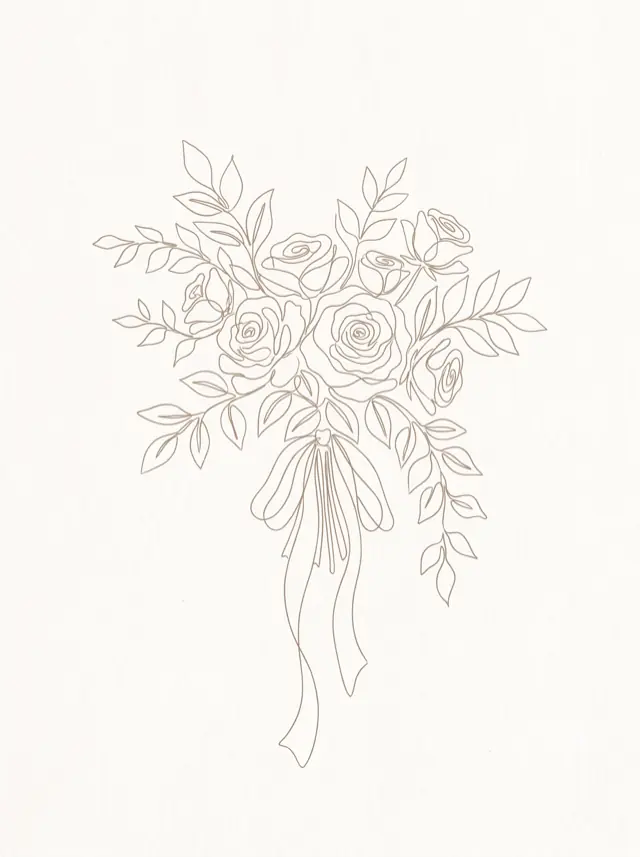
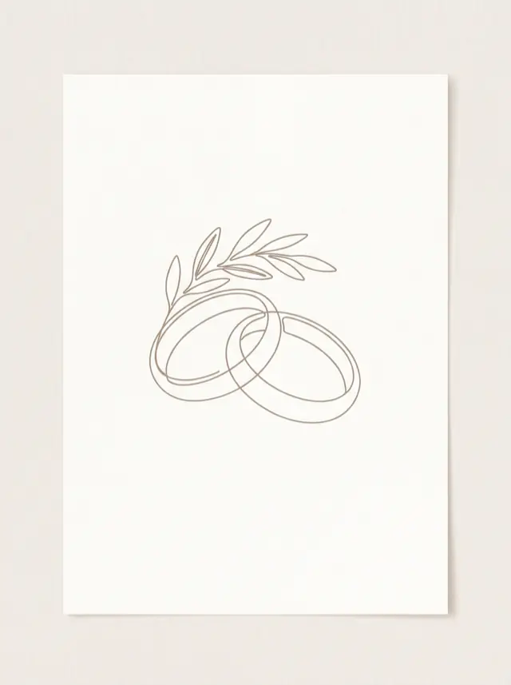
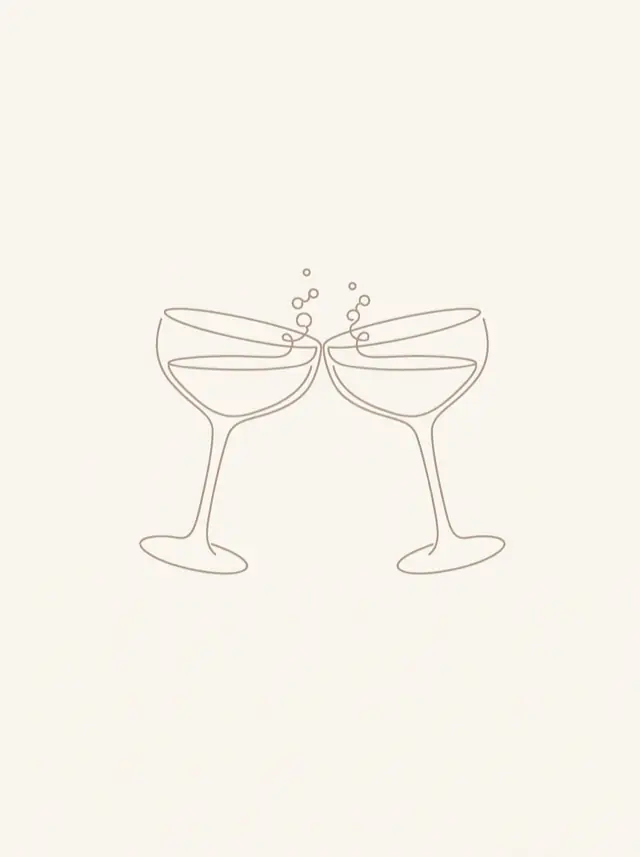
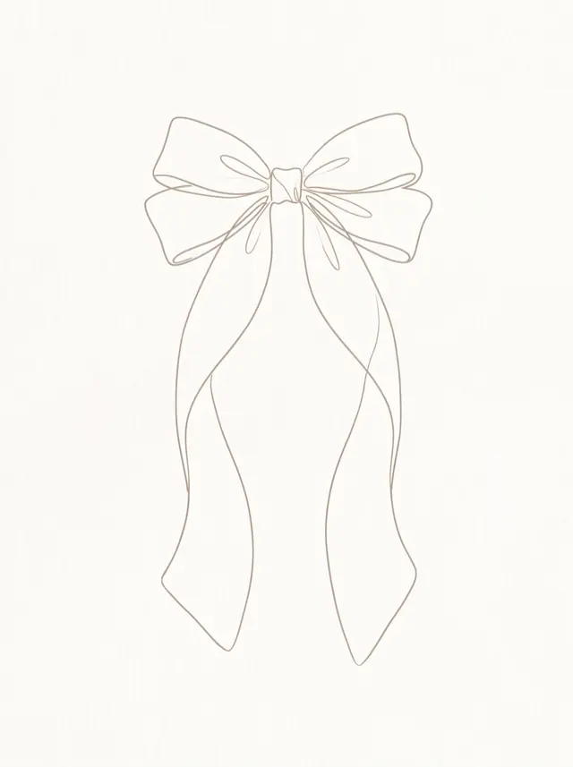

Press the seal

Wir heiraten
17 July 2027
Counting the days
Until the cake is cut.
Today is the day.
Our journey
We met in the stairwell, because nothing else was open. Ben left bread outside Emma's door for two weeks.
Emma baked, Ben ate. That division of labour has not changed since.
Meant to stay a week. Still here. Coming along.
Between the flour and the baking powder, no ring, no plan. The cashier applauded too.
A glimpse of us




What we have prepared for you
Lemonade, shade, hellos.
In the rose garden. Tissues are provided.
Eleven kinds. We counted.
Outside, weather permitting.
Then everyone. Really everyone.
Chips. Nothing fancier.
And breakfast at ten for everyone who stays.
Join us
Everything you need to know.
Ceremony at 2:00 pm
A white orangery with roses at the windows and a rose garden in front. The entrance is beside the big chestnut tree.
Kaltenbacher Allee 5
53343 Wachtberg
One request
Colourful, bright, summery — whatever makes you happy. We celebrate outdoors on grass and gravel, it will be warm, and there will be dancing well into the night.
We would love to see you
Please let us know by 15 May 2027.
The email should have opened. If not: here.
On our own behalf
Our kitchen is full and so is the cellar. If you would still like to give something: we are saving for a week somewhere nobody has our phone number.
Plan your visit
So your visit is as comfortable as it can be.
On site
Nine rooms
Rooms held until 1 May
14 km
Four stars
Rooms held under "Emma & Ben"
6 km
Small
Warm and affordable
If you are staying on, these places are worth your time:
You asked
If your card names a guest, of course! Please enter them above so we can count.
Yes please. There is a bouncy castle, ice cream and two carers in the garden house from 4 pm.
Biscuit is coming too, so yes — as long as yours gets on with other dogs. Just let us know.
Then we move into the orangery. It is big enough and far nicer than the name suggests.
A shame, but tell us early. We will save you a slice of cake.